U6 L4 Electromagnet Lab: Investigate, Analyze, and Report
Open the revised Rise course
Authoring source and revision record. All three processes are native Rise blocks. Invented data are labeled as practice. The assigned lab requirements remain unchanged.
Plan a fair electromagnet investigation
Plan a fair electromagnet investigation

Practice scenario: a fictional team asks whether increasing current changes how many paperclips an electromagnet can lift. Use this model to learn the structure of a lab report. The sample results are invented for analysis, not observations from your assigned simulation.
Ask a measurable question
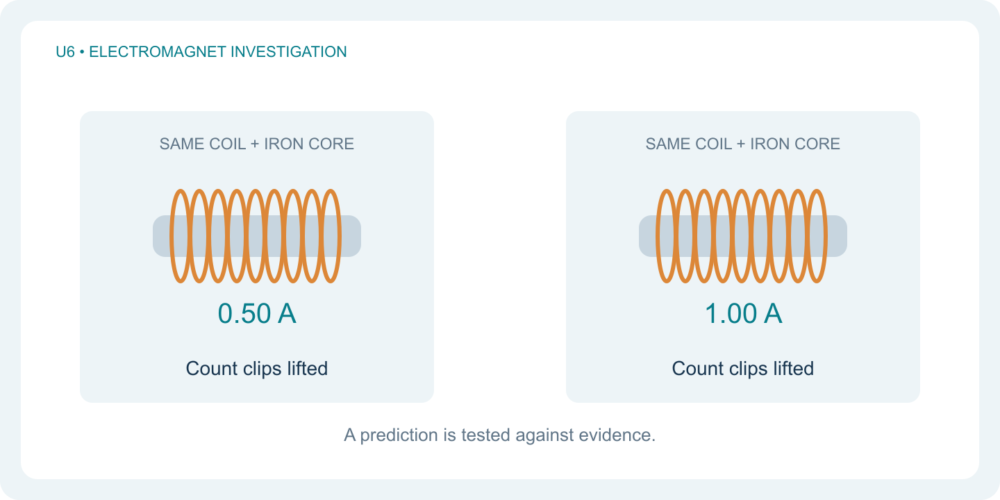
How does changing current from 0.50 A to 1.00 A affect the number of identical paperclips lifted by the same electromagnet? Clip count is a measure of lifting performance, not a direct reading of magnetic-field strength.
Predict and explain
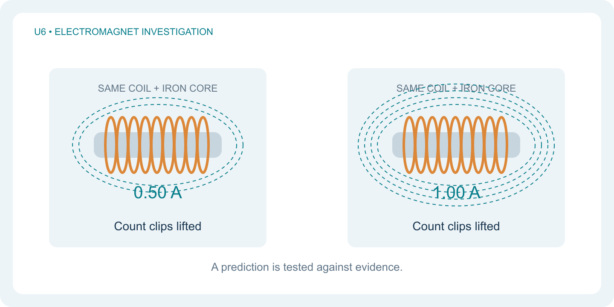
Prediction: the electromagnet will lift more clips at 1.00 A. Reason: moving charges create a magnetic field, and greater current strengthens the field for the same coil and core. This is a prediction to test, not a result to copy.
Separate the variables
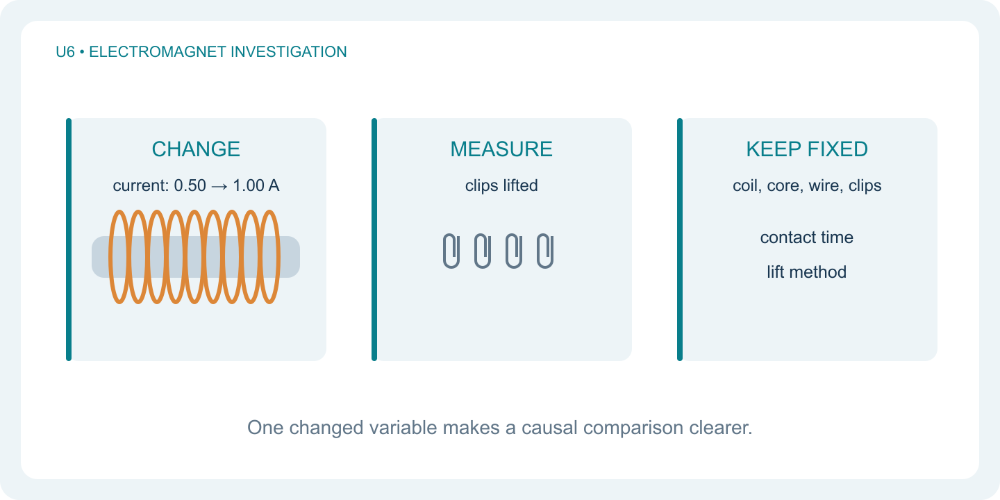
Change current only. Measure clips lifted. Keep the coil turns, iron core, wire, clip type, pickup contact time, and lift method the same. In this fictional physical setup, an adjustable current supply changes current without rebuilding the coil.
Write a repeatable method

Practice apparatus: 50 turns of insulated copper wire, conductor diameter 0.50 mm, around an 8 cm iron nail. Use an adjustable current supply and identical clips. Set 0.50 A. Contact the clip pile for 3 seconds, lift 2 cm, and count clips retained after 3 seconds. Return clips and repeat three times, allowing cooling between tests. Repeat at 1.00 A. Record every result. This fictional physical method is practice; the assigned lab is a simulation.
Your report begins before testing
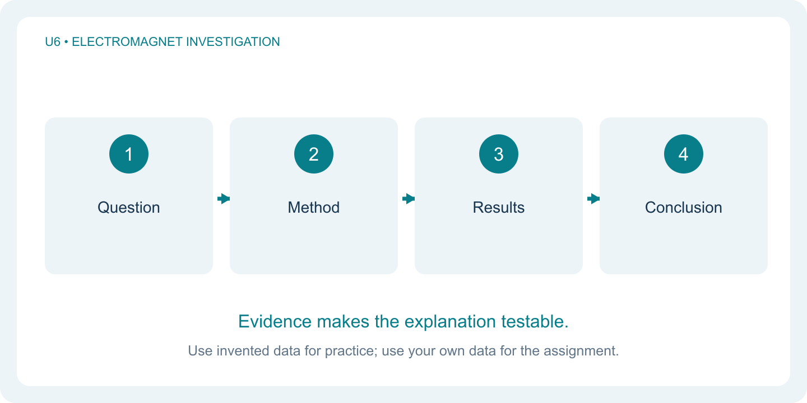
Write the question, prediction with a reason, variables, and method before examining results. These sections explain what you tested and make the comparison understandable to someone who was not present.
How to complete the assigned Electromagnet Design Lab
How to complete the assigned Electromagnet Design Lab

Open the Electromagnet Design Lab in the Unit 6 Lesson 4 Buzz assignment. Follow its trial sequence and use your own displayed results. The fictional current experiment in this lesson teaches reporting skills; its numbers do not replace your lab results.
Complete and check Trials 1–5
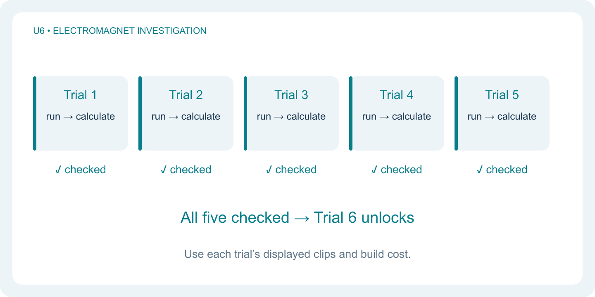
Select each trial tab and run its preset test. Record settings, clips lifted, displayed build cost, and wire length. Divide clips by the displayed cost, round to two decimal places, and choose Check calculation. A correct check turns the trial tab green. Complete all five to unlock Trial 6.
\text{Value ratio}=\frac{\text{clips lifted}}{\text{displayed build cost}}Make comparisons that isolate a cause
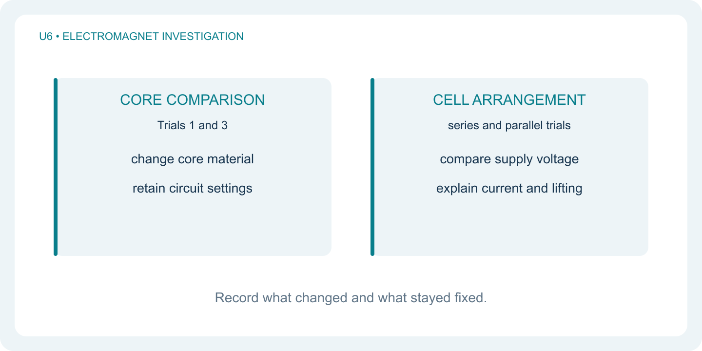
Compare Trials 1 and 3 to explain the core-material effect: identify what changed, what stayed fixed, and both clip counts. Compare the series and parallel trials to explain how the cell arrangement changes current. More turns also add wire resistance and cost, so explain those tradeoffs instead of assuming more turns must be best.
Test at least three different designs
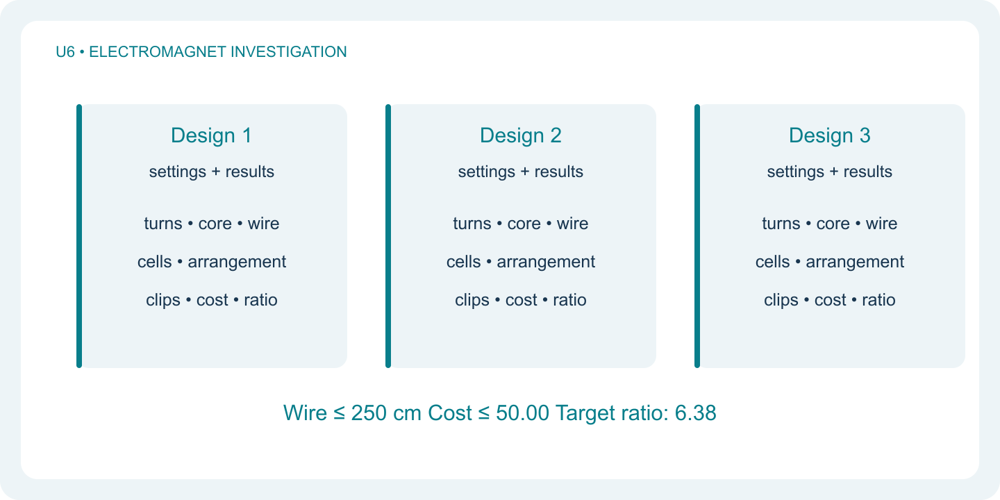
In Trial 6, record at least three different designs. For each, save turns, core, wire diameter, cell count and arrangement, clips, cost, wire length, and value ratio. Respect both limits: wire at most 250 cm and cost at most 50.00. Seek the target ratio of 6.38. Changing several settings can optimize a design, but cannot isolate the cause of an improvement.
Compare value and explain the evidence
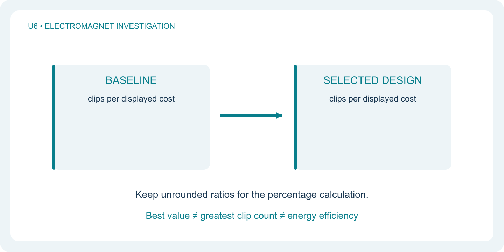
Compare your selected design with your Trial 1 baseline using clips per cost. Calculate with unrounded ratios derived from the displayed costs; round only the final percentage to one decimal place. Explain why the strongest design may not give the best value. The ratio measures value, not energy efficiency.
\text{Improvement (\%)}=\left(\frac{R_{\text{new}}}{R_{\text{baseline}}}-1\right)\times100Use your records to answer the Buzz questions
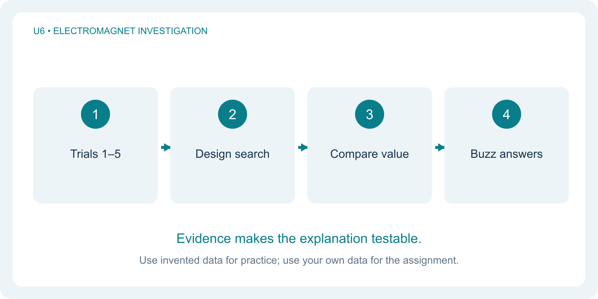
Complete the ten assigned Buzz questions using your own trial results. For the written responses, connect a claim to numerical evidence and a physics explanation. Keep your three-design comparison available. A results download is optional; the assignment uses its Buzz questions rather than requiring a separate report upload.
Build a lab report from sample evidence
Build a lab report from sample evidence

The following report models a fictional physical investigation. Invented practice data: at 0.50 A, the team lifts 9, 10, and 11 clips; at 1.00 A, it lifts 18, 20, and 19 clips. Study how the report separates observations from explanations. Use your own results in the assigned lab.
State the question and prediction

Question: how does current affect the clip count for this coil and core? Prediction: increasing current from 0.50 A to 1.00 A will increase the number lifted because greater current strengthens the magnetic field when the coil and core are fixed. The prediction was written before looking at results.
Describe the method and controls
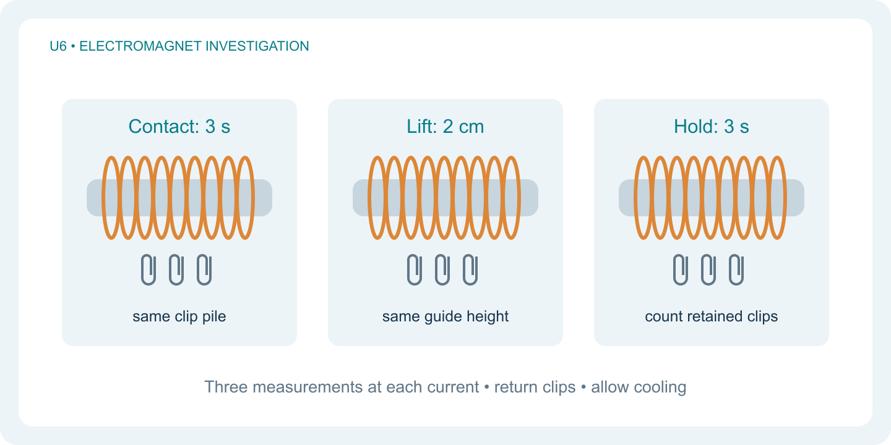
The fictional team used 50 turns of insulated copper wire, conductor diameter 0.50 mm, around an 8 cm iron nail, identical clips, and an adjustable current supply. At each current it made three measurements: 3 seconds of contact, a 2 cm lift, and a 3-second hold before counting. It returned clips and allowed cooling between trials. Stating the apparatus and measurement procedure makes the comparison easier to reproduce.
Present results before interpreting them
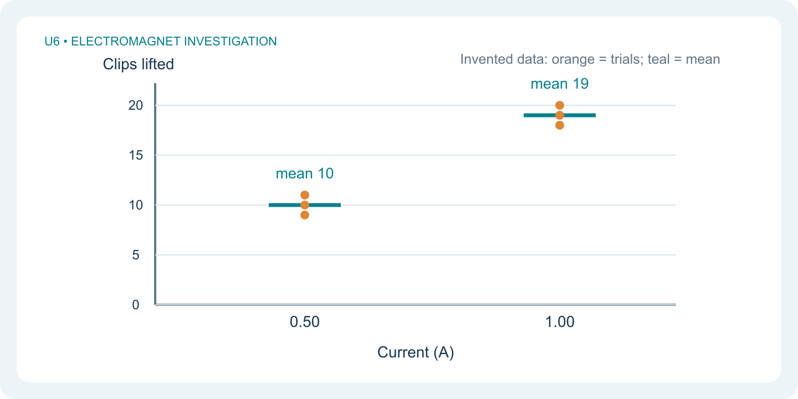
List all six observations in a table with current in amperes and clip count for each trial. Plot current on the horizontal axis and mean clips lifted on the vertical axis. Show individual observations too, so the reader sees the spread. Two current settings do not establish the shape of a relationship across all currents.
Show one sample calculation
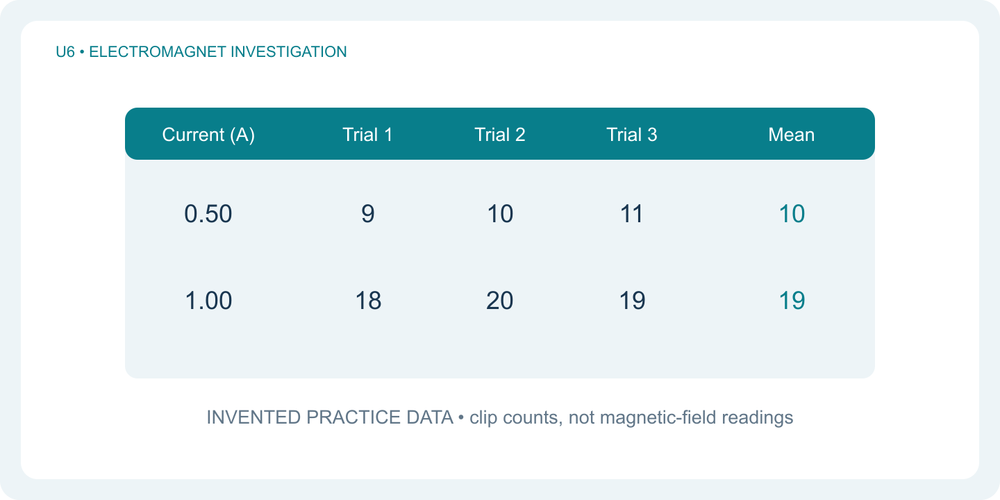
Add the three clip counts at each current and divide by three. The means are 10 and 19 clips. The increase is 9 clips, which is 90% of the original mean. Current doubled, but the measured mean clip count did not exactly double.
\begin{aligned}\bar n_{0.50\,\mathrm A}&=\frac{9+10+11}{3}=10\text{ clips}\\\bar n_{1.00\,\mathrm A}&=\frac{18+20+19}{3}=19\text{ clips}\\\text{Increase}&=\frac{19-10}{10}\times100=90\%\end{aligned}Connect claim, evidence, and reasoning
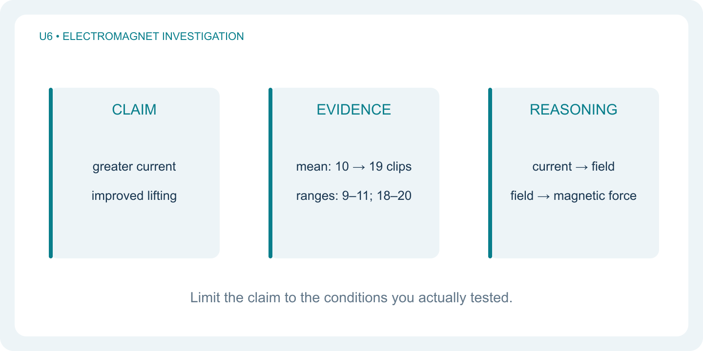
Claim: greater current increased lifting performance for this setup. Evidence: the mean rose from 10 to 19 clips, with trial ranges of 9–11 and 18–20. Reasoning: current produces a magnetic field; a stronger field in the same coil and core can exert a greater magnetic force on the clips. Clip count is indirect evidence, not a field measurement in tesla.
Evaluate limits and propose an improvement
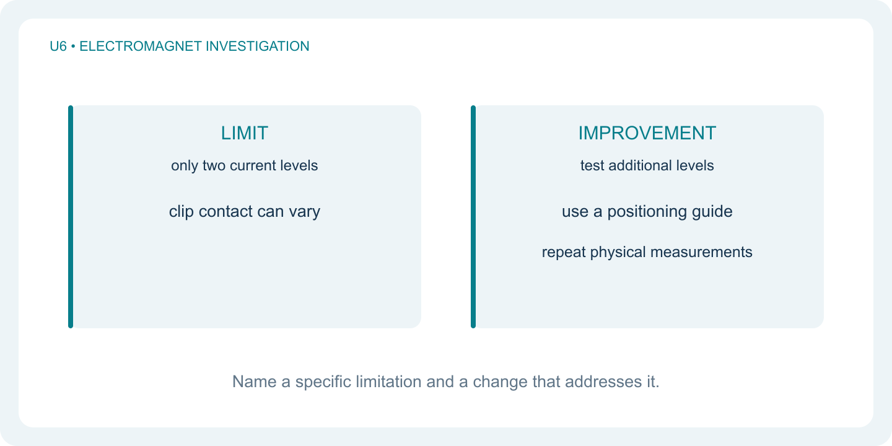
Only two current levels and three repeats were tested. Clip arrangement could change how well clips make contact. Improve the physical method by using a guide for the pickup position and lift height, and test more current levels with repeats. Repeating identical settings in a deterministic simulation may return identical values; it does not create new evidence about physical measurement uncertainty.
Use the structure with your own investigation

A clear lab report contains a question and prediction, a repeatable method, labeled results, sample calculations, and a conclusion with limitations. In the assigned design lab, apply this structure to your notes and written Buzz answers. Distinguish a fair comparison that explains a cause from a multi-setting design search that finds better value.
Teacher reference: independent practice
Means: 12 and 18 clips. Increase: 50%. Current doubles but the clip count does not.